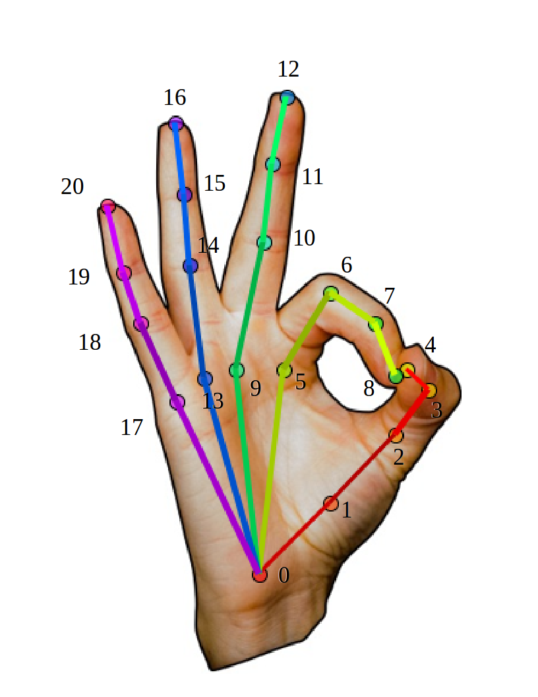

|
OpenPose
1.7.0
The first real-time multi-person system to jointly detect human body, hand, facial, and foot keypoints
|
|
OpenPose
1.7.0
The first real-time multi-person system to jointly detect human body, hand, facial, and foot keypoints
|
The visual GUI should show the original image with the poses blended on it, similarly to the pose of this gif:

The output of the JSON files consist of a set of keypoints, whose ordering is related with the UI output as follows:



There are 2 alternatives to save the OpenPose output. But both of them follow the keypoint ordering described in the section Keypoint Ordering in C++/Python section (which you should read next).
--write_json flag saves the people pose data into JSON files. Each file represents a frame, it has a people array of objects, where each object has:pose_keypoints_2d: Body part locations (x, y) and detection confidence (c) formatted as x0,y0,c0,x1,y1,c1,.... The coordinates x and y can be normalized to the range [0,1], [-1,1], [0, source size], [0, output size], etc. (see the flag --keypoint_scale for more information), while the confidence score (c) in the range [0,1]. Additionally, the number of keypoints output in this array will remain consistent between JSON files.face_keypoints_2d, hand_left_keypoints_2d, and hand_right_keypoints_2d are analogous to pose_keypoints_2d but applied to the face and hand parts.body_keypoints_3d, face_keypoints_3d, hand_left_keypoints_2d, and hand_right_keypoints_2d are analogous but applied to the 3-D parts. They are empty if --3d is not enabled. Their format is x0,y0,z0,c0,x1,y1,z1,c1,..., where c is 1 or 0 depending on whether the 3-D reconstruction was successful or not.part_candidates (optional and advanced): The body part candidates before being assembled into people. Empty if --part_candidates is not enabled (see that flag for more details). --write_keypoint uses the OpenCV cv::FileStorage default formats, i.e., JSON (if OpenCV 3 or higher), XML, and YML. It only prints 2D body information (no 3D or face/hands).(Low level details) If you wanted to change anything in this file format (e.g., the output file name), you could check and/or modify peopleJsonSaver.cpp.
The body part mapping order of any body model (e.g., BODY_25, COCO, MPI) can be extracted from the C++ and Python APIs.
getPoseBodyPartMapping(const PoseModel poseModel) is available in poseParameters.hpp: This section is only for advance users that plan to use the C++ API. Not needed for the OpenPose demo and/or Python API.
There are 3 different keypoint Array<float> elements in the Datum class:
person and body part part (where the index matches POSE_COCO_BODY_PARTS or POSE_MPI_BODY_PARTS), you can simply output: We use the standard formats (JSON, PNG, JPG, ...) to save our results, so there are many open-source libraries to read them in most programming languages (especially Python). For C++, you might want to check include/openpose/filestream/fileStream.hpp. In particular, loadData (for JSON, XML and YML files) and loadImage (for image formats such as PNG or JPG) to load the data into cv::Mat format.
If you need to use the camera calibration or 3D modules, the camera matrix output format is detailed in doc/advanced/calibration_module.md#camera-matrix-output-format.
If you need to use heatmaps, check doc/advanced/heatmap_output.md.